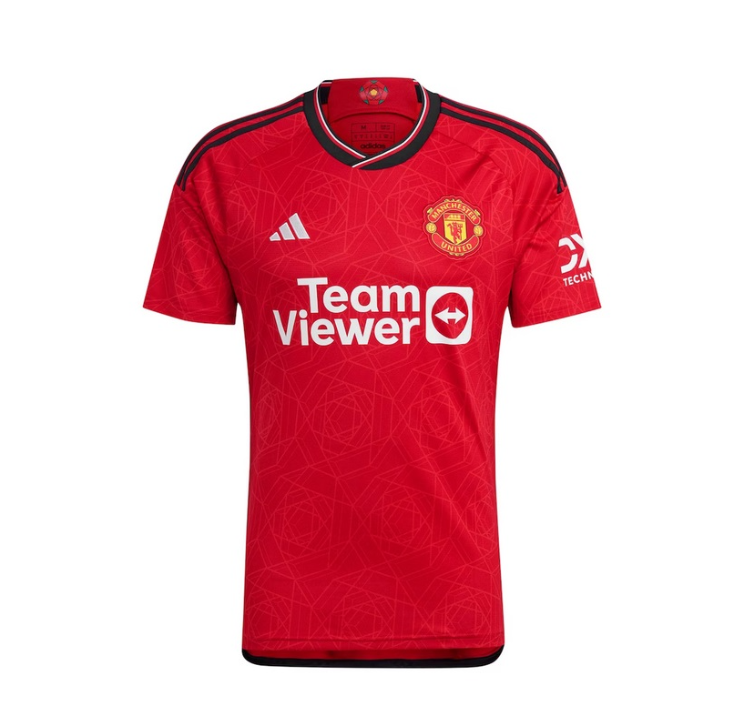
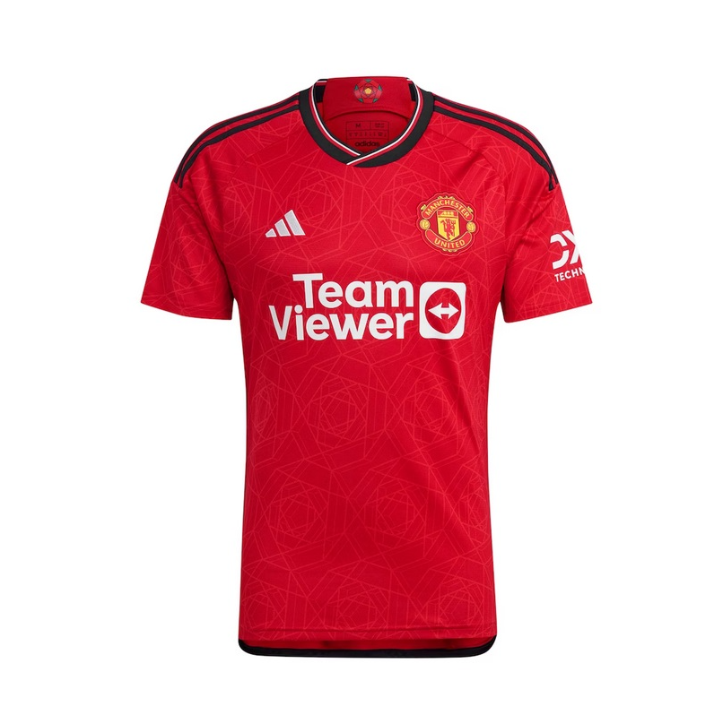

¿Quiénes somos?
Somos una tienda apasionada por ofrecer sudaderas de alta calidad, diseñadas para brindarte estilo y comodidad en cada momento. Creemos en la moda sostenible y en el diseño innovador.
Nuestros productos

 


Nuestra Historia
Nacimos con la idea de ofrecer prendas únicas y atemporales. Desde nuestros inicios, hemos trabajado con diseñadores locales y materiales sostenibles para crear una experiencia auténtica para nuestros clientes.